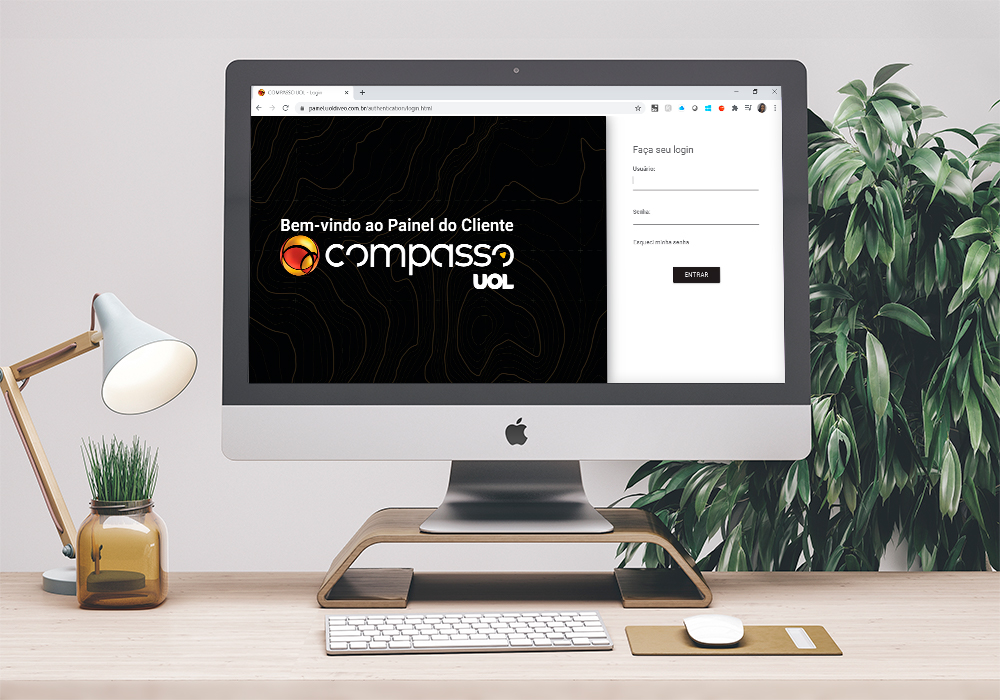

Compasso Uol
Descrição do Projeto
O painel do cliente é a ferramenta de gestão serviços, nela é possivel registrar um chamado e fazer o acompanhamento do inicio ao fim.
Este projeto consistiu na mudança de layout, corrigindo cores de acordo as cores do Grupo Compasso Uol.
←Voltar ao Portfólio